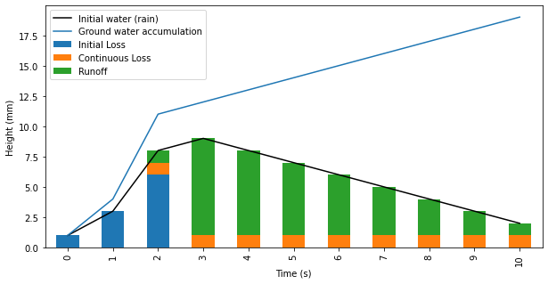
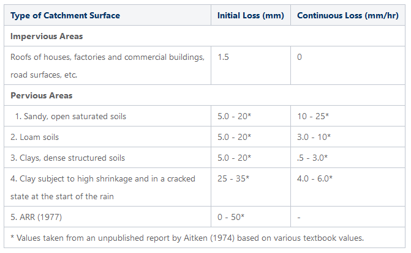

|
BG_Flood
0.8
Documentation (Work-in-progress)
|
|
BG_Flood
0.8
Documentation (Work-in-progress)
|
Rainfall is often absorbed in soil and leaf litter before joining surface flow.The default behaviour of BG_Flood is to assume the rainfall given as input is actually runoff (i.e. rainfall exess that will make the surface flows). Instead a basic initial - continuous loss model can be apply to approximate runoff.
The Initial Loss - Continuous Loss (ILCL) is a very basic model for infiltration of surface water in the soil. It requires the input of two maps, based on the soil properties: one containing an initial loss coefficient \(il\) in mm, the second containing a continuous loss coefficient \(cl\) in mm/hr.
In this model, the initial and continuous losses are applied directly on the water elevation computed on each cell (and not by modifying the rain input). The value of the initial loss \(il\) is estimated to be the total of water infiltrating in the ground before the beginning of the surface runoff, whereas the continuous loss \(cl\) is the loss that occurs, on wet cells, from the begining of the surface runoff to the end of the simulation. The water absorbed in the ground will be tracked using the ground water elevation variable \(hgw\) but wont be reintroduced to the surface flow through the computation process.
On each cell, at each simulation step, we can express the quantity of water absorbed in the ground \(ha_{t}\) using:
where \(il\) and \(cl\) are respectively the initial loss and continuous loss coefficient at a given cell location, and \(hgw_{t}\) is the accumulated ground water at this cell location since the begining of the simulation.
The water absorbed is then added to the ground water tracking variable: $$hgw_{t}=hgw_{t-1} + ha_{t}$$ and removed from the surface water height and the surface water elevation (not shown here): $$h_{t \;final} = h_{t} - ha_{t}$$
The following figure shows a representation of the initial loss - continuing loss model with \(il = 10 mm\) and \(cl = 1 mm/s\) :

Initial loss and continuing loss reprensentation during a cell-wetting event
-> All cells that are initially wet at the begining of the simulation ( \(h > XParam.eps\)) will have their initial loss ( \(il\)) set to 0.0, in order to be consistent with the physic of the model.
The ILCL model is tested in the Westport (ANZ) area, on the Orowaiti river (with a uniform 5m grid). A 20mm/hr rain is uniformly applied on the domain during 30 minutes. An initial loss of 5mm and an continuous loss of 5mm/h are used to define infiltration uniformly on the domain. The results, compared to a reference case without infiltration, are presented in the following figure. 
Some reference values for the \(il\) and \(cl\) coefficients can be found in the literature. Some relate to entire subcatchment and are estimated from hydrology, other can be defined using local information (type of soil, rain antecedents, soil layer depth, ...). Whatever you select, be mindfull the model is likely to be very sensitive to rainfall loss.
The Initial loss is usually defined based on the antecedent moisture conditions and the soil layer depth and range from 0 to 50mm. The Australian Rainfall & Runoff project concidere the initial loss value at a catchemnt scale and observed a low mean value of 1.1mm in urban catchments; in rural catchment, the initial loss is highly variable with a mean of 32mm and a standard deviation of 17mm.
The Constant loss rate can typically be related to the saturated hydraulic conductivity. The following table as been produced by Rawls, Brakensiek, and Miller (1983) using mesurements on soil samples from the USA.
| Soil texture class | Hydraulic conductivity or continuous loss (mm/h) |
|---|---|
| Sand | 117.8 |
| Loamy sand | 29.9 |
| Sandy loam | 10.9 |
| Loam | 3.4 |
| Silt loam | 6.5 |
| Sandy clay loam | 1.5 |
| Clay loam | 1.0 |
| Silty clay loam | 1.0 |
| Sandy clay | 0.6 |
| Silty clay | 0.5 |
| Clay | 0.3 |
Below is the ARR 2016 Rainfall Loss Parameters for Urban area, depending of the surface type:
| Urban Surface | Burst Initial loss (mm) | Continuing loss (mm/hr) |
|---|---|---|
| Effective Impervious Area | 0.4 | 0.0 |
| Indirectly Connected Area | 16.1 | 1.6 |
| Urban Pervious Area | 26.9 | 1.6 |
Below is an other example of compilation of some of these values from https://help.innovyze.com/display/xprafts/Initial+and+Continuing+Loss+Model.
